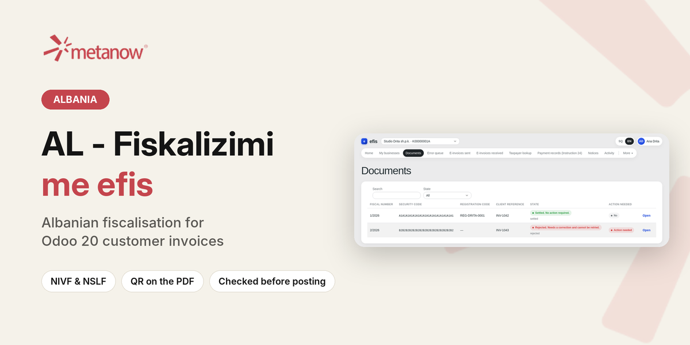
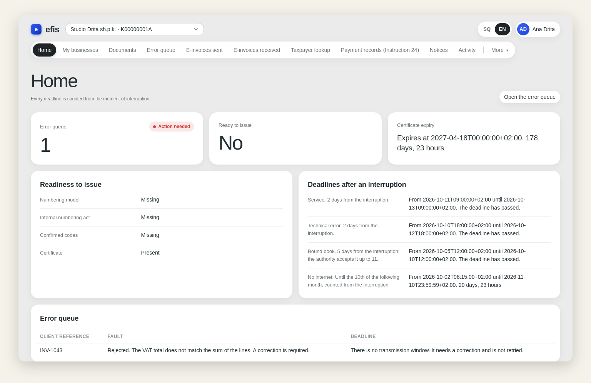
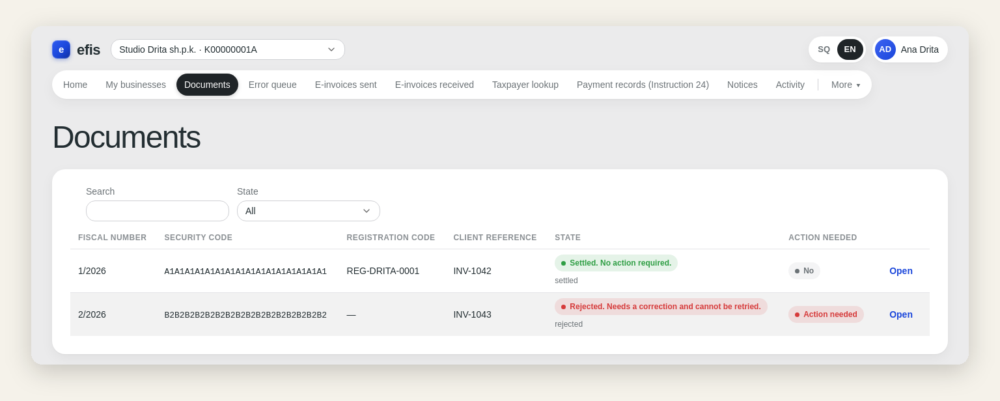
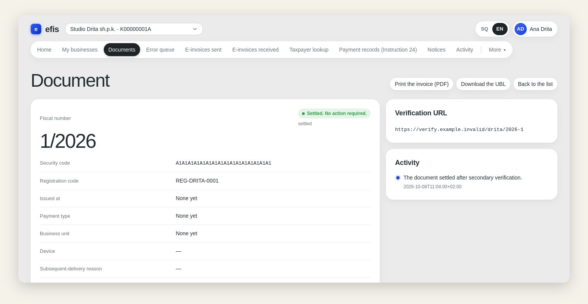
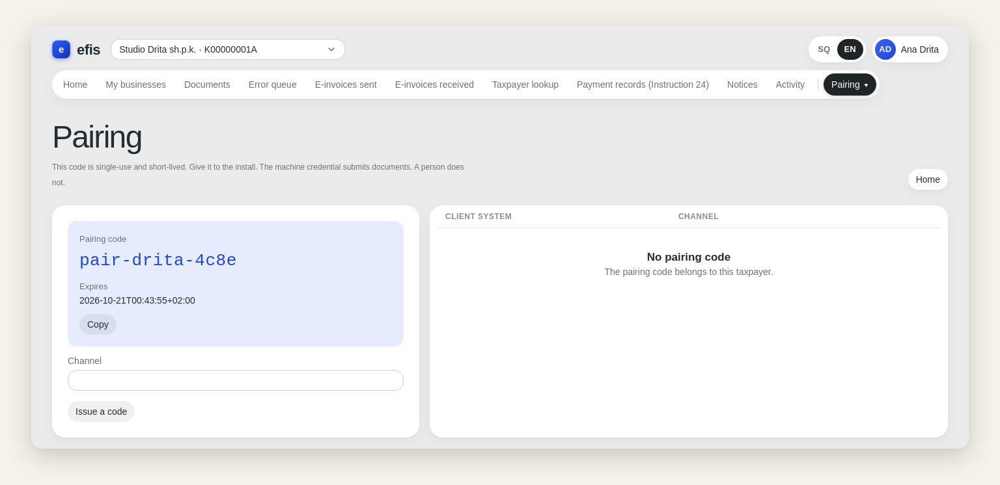

Every customer invoice you post in Odoo is fiscalised with the Albanian tax authority through efis, and comes back with its fiscal number, its NIVF and NSLF codes and the QR code your customer can verify. Your accountants keep working in Odoo as before.

Since 2021, every invoice an Albanian business issues has to be registered with the tax authority (Fiskalizimi, Law 87/2019) before it reaches the customer. efis is a fiscalisation platform by Metanow that does this work: it signs, numbers and registers each invoice and follows it until it is settled. This module connects Odoo to efis, so fiscalisation happens on posting, without a second program.
Behind the module, the efis web console shows every document, its state and its deadline, the certificate and the registry codes, and issues the pairing code that connects Odoo.

Home: what needs action, readiness to issue, and the legal deadlines after an interruption.

Documents: every invoice with its fiscal number, codes and state.

One document: the codes, the verification URL and its history.

Pairing: the single-use code that connects your Odoo.
efis is an external service run by Metanow. This module is its Odoo client and does nothing on its own: you need an efis account for your business. To get one, write to support@odoo.metanow.com or visit metanow.com.
Nothing leaves Odoo until an administrator turns fiscalisation on in Settings and pairs the company with efis. From then on, each posted customer invoice is sent to efis: the seller's tax number, address and registration codes, the buyer's name, identifier, address, town and country, and the invoice's lines, taxes, totals and payment method. efis registers it with the Albanian tax authority and returns the result.